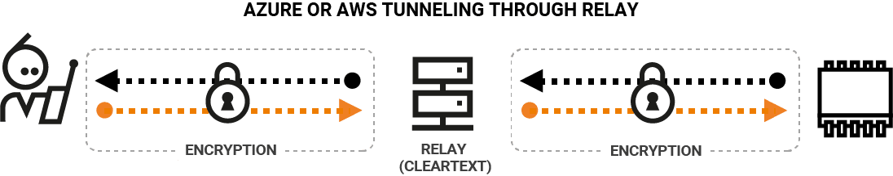
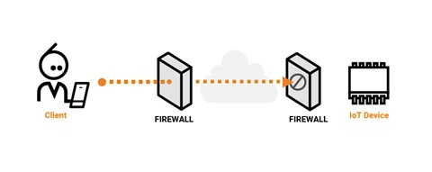
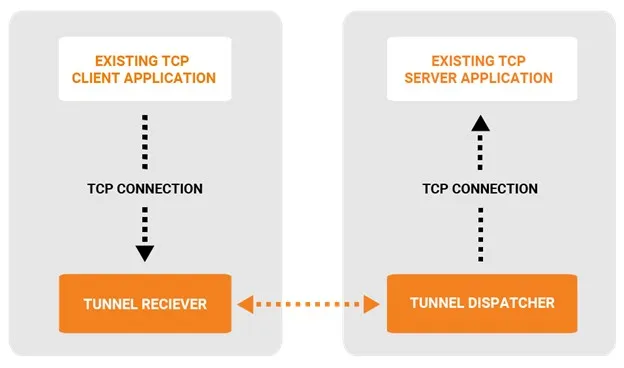

La tunelización en el contexto de Internet de las Cosas (IoT) desempeña un papel crucial para garantizar la seguridad, eficiencia y confiabilidad de las comunicaciones entre dispositivos conectados.
Conectividad Segura en Dispositivos IoT
Los dispositivos IoT suelen operar en entornos heterogéneos y pueden utilizar diferentes tecnologías de red.
Por lo que la tunelización permite establecer una conectividad segura entre dispositivos IoT y las plataformas de gestión centralizada a través de redes potencialmente inseguras, como Internet. Los túneles proporcionan un medio seguro para la transmisión de datos, protegiéndolos contra posibles amenazas.
 Imagen ilustrativaMovilidad y escalabilidad de dispositivos IoT
La movilidad de los dispositivos IoT y la gestión eficiente a medida que la cantidad de dispositivos aumenta.
La tunelización facilita la movilidad de los dispositivos IoT al proporcionar una capa adicional de abstracción. Los dispositivos pueden cambiar de red o ubicación sin interrupciones significativas, ya que los túneles pueden adaptarse dinámicamente a los cambios en la topología de la red.
 Imagen ilustrativaIntegración con Protocolos IoT
Dado que muchos dispositivos IoT tienen recursos limitados, la integración de protocolos de tunelización ligeros, como Lightweight M2M (LwM2M), asegura que la sobrecarga asociada con la tunelización sea mínima.
La tunelización permite optimizar el tráfico IoT al reducir la cantidad de datos transmitidos a través de la red. Solo los datos relevantes y procesados se envían a través del túnel, mejorando la eficiencia de la comunicación.
 Imagen ilustrativa